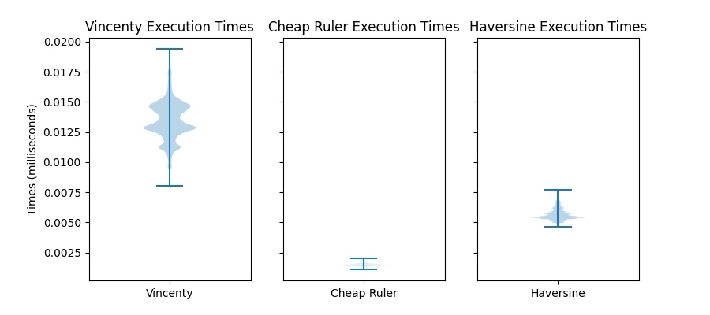
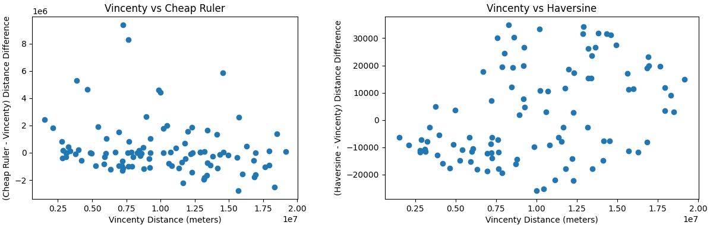

Landscape Size
The size of the landscape along with the number of traps in it determine the total processing power required for the optimization of the traps’ placements.
For our tests, we ran a regular square-grid landscape with an increasing number of points and traps.
We ran this code with the base DEAP implementation of a genetic algorithm with Gaussian mutation, blend crossover and tournament selection.
The algorithm was run for 1000 generations (and five repetitions per scenario) in a server with 88 cores, 3GHz processors (two 22 processor sockets) and 250GB RAM.
The scaling on landscape size follows this behavior:

Whereas the scaling on traps number adheres to the following:

While these times are hardware-dependent (and we have a dedicated server to run our tests with tons of memory), the shape of the response to landscape sizes should help inform the decision on land size/traps number to be run in a general-use computer.
The code used for these benchmarks can be found in this link
Distance Functions (Author: Elijah Bartolome)
1,000,000 pairs of random points were created. Each point had a valid longitude and latitude value (the longitude was a random number between and while the latitude was a random number between and)
The distance between each pair of random points was calculated with each distance function. Each function used the same pairs of points. Here are the times it took to calculate the distance between all 1,000,000 pairs:
Vincenty: 13.3743638 seconds
Cheap Ruler: 1.6893626000000026 seconds
Haversine: 2.408093000000001 seconds
Here are violin plots of the distribution of execution times for all 1,000,000 pairs of points for each distance function:

Both Haversine and Cheap Ruler are about 10 seconds faster than Vincenty when calculating the 1,000,000 points. So for optimizing runtime, Haversine and Cheap Ruler are ideal with Cheap Ruler having a slight advantage.
Cheap Ruler , however, has a wide, problematic range of error. Haversine, in comparison, has an error range orders of magnitude smaller than Cheap Ruler .
If one wants to try to minimize runtimes while trying to preserve the accuracy of the distance function, then Haversine is the optimal distance function compared to Vincenty and Haversine.

{kind=link}
{kind=link}